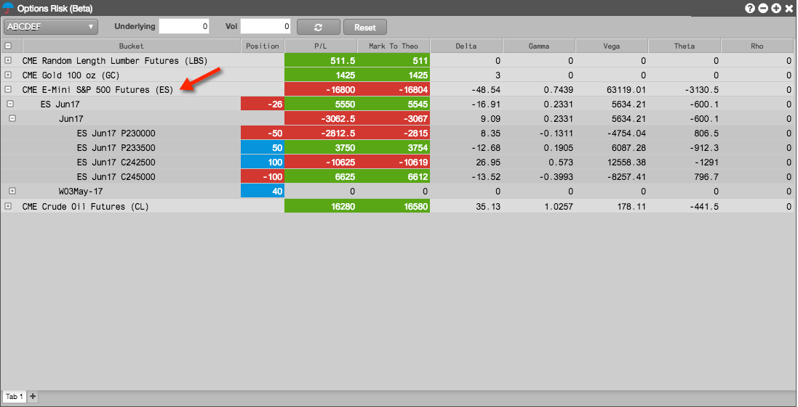
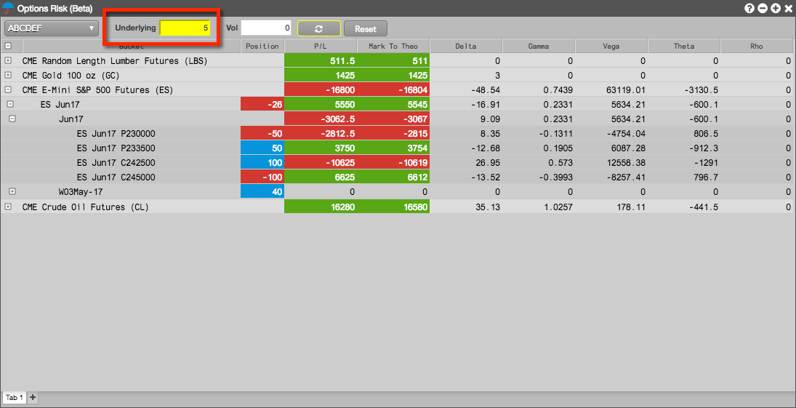
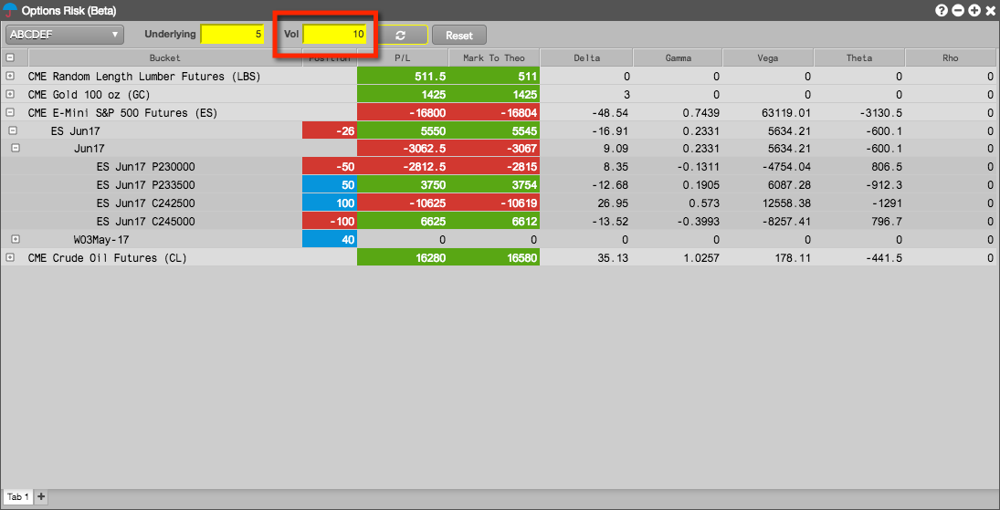
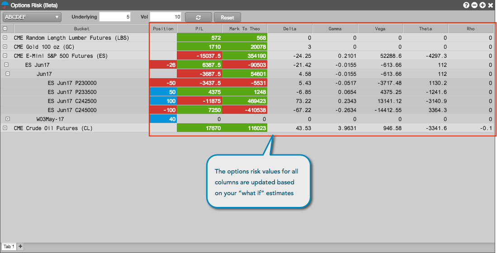

To view options risk:
- Open the Options Risk widget and select an account.
- Click the expander icon to expand the Bucket column, or click the expander next to a product.
The Bucket column displays the products for which you have a position in that account. When expanded, the column displays positions, P/L, and Greek calculations for the options contracts and underlying futures contract per expiry.

The Position, P/L, and options risk columns provide a snapshot of your options risk.
- To recalculate the position and P/L in the account based on the current price of the underlying instrument, click
 .
.
Estimating options risk
Using the Options Risk widget, you can apply adjustments to the price of the underlying futures contract and global volatility for options risk to estimate their impact on your open position.
To estimate options risk:
To estimate your position based on a price move in the underlying futures contract, enter a value in the Underlying
field.
Enter a percentage or absolute value based on the Display underlying adjustments as setting in the Options Risk settings. For example, an Underlying value of "5" and unit of measure of "Percentage" represents a 5% increase in the price of the underlying future. Negative values can also be entered.
The Underlying field highlights yellow when a change is made to this text field.

- To estimate your position based on an increase or decrease in global volatility, enter a value in the Vol
field.
Enter an absolute value or percentage based on the Display volatility adjustments as setting in the Options Risk settings. For example, a Vol of "10" and unit of measure of "Absolute" represents a 10% increase in global volatility (the absolute value is actually a percentage when estimating changes in volatility). Negative values can also be entered.
The Vol field highlights yellow when a change is made to this text field.

If necessary, you can click Reset to move the adjustments back to zero and enter different values as needed.
To calculate and display the estimated change in your open position based on one or both of the adjustments, click  .
.
